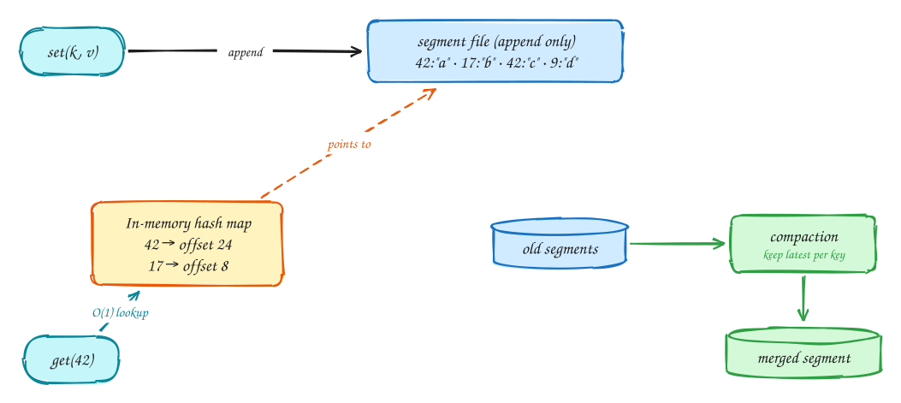
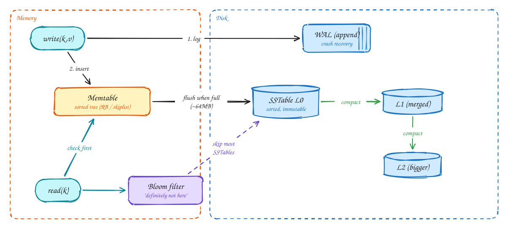
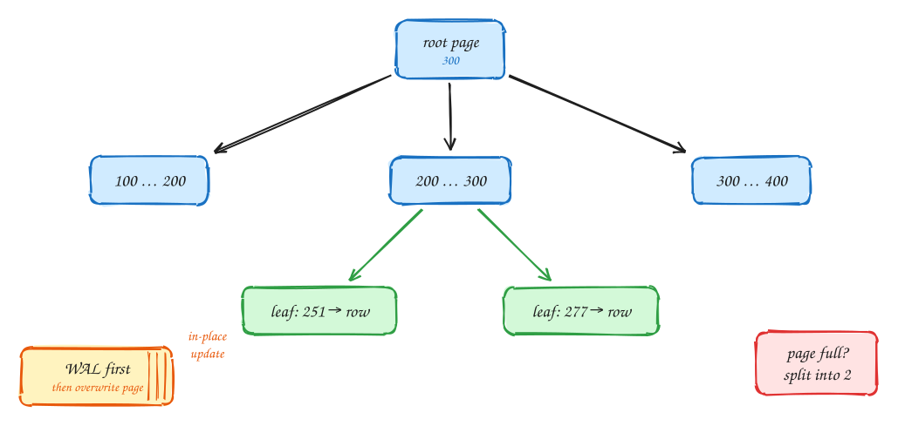
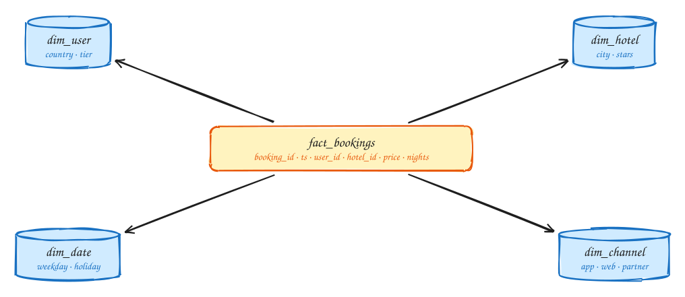
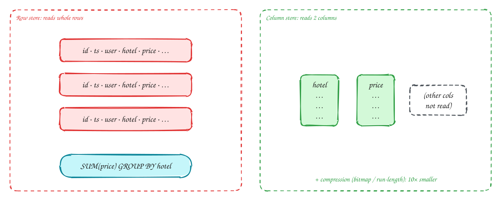

DDIA Chapter 3: Storage & Retrieval¶
Intermediate
These DDIA pages are study notes in our own words and diagrams, connecting the book to interview problems. They don't replace the book; Designing Data-Intensive Applications by Martin Kleppmann is worth reading in full.
Tip
One-page sketchnote: DDIA 3 · STORAGE & RETRIEVAL on a single page, for revision or printing.

TL;DR¶
How a database actually stores bytes. Two families power almost everything: log-structured engines (LSM trees in Cassandra, RocksDB, Kafka) that append, and page-oriented engines (B-trees in Postgres, MySQL) that update in place. Plus why analytics needs column storage.
Key ideas: append-only log · hash index · SSTable · LSM-tree · B-tree · WAL · column store · star schema
The simplest database: append-only log + hash index¶
Log-structured storage (Bitcask)
To understand real storage engines, start by building the simplest possible database: a key-value store backed by one file.

- Writing: every
set(key, value)is appended to the end of the file. Nothing is ever changed in place. Appending is the fastest thing a disk can do, because it writes sequentially instead of jumping around the disk. - Finding things: scanning the whole file on every read would be hopeless, so keep an index in memory: a hash map from each key to the byte position (offset) where its latest value starts in the file.
- Reading: look the key up in the hash map, jump straight to that offset, and read the value. That's one memory lookup and one disk read.
- Cleaning up: if a key is updated a million times, the file holds a million old values. So the file is split into segments, and a background process called compaction rewrites old segments keeping only the newest value for each key, then deletes the old files.
This is a real design: Bitcask, the storage engine of the Riak database, works exactly like this, and it is very fast.
Warning
Two limits: every key must fit in the in-memory hash map, so you can't have billions of keys. And a hash map has no order, so range queries ("all keys between user:100 and user:200") are impossible. Sorting the data, next, fixes both.
LSM-tree: how Cassandra and RocksDB write so fast¶
SSTables + LSM
Keep the "only append, never overwrite" idea, but store the keys sorted. A sorted file of key-value pairs is called an SSTable (Sorted String Table). Because it is sorted, you no longer need every key in memory: a sparse index of every few-thousandth key is enough to find the right region of the file. Range scans become easy too. The challenge is keeping things sorted while writes arrive in random order. An LSM-tree (log-structured merge-tree) does it like this:

- Write: each write is appended to a write-ahead log on disk (so it survives a crash) and inserted into a memtable, a sorted structure in memory such as a balanced tree. Sorting in memory is cheap, and no random disk writes happen.
- Flush: when the memtable reaches a few megabytes, it is written to disk in one go as a new SSTable. That's one big sequential write. The file is never modified again.
- Compact: over time there are many SSTables, and a key may appear in several of them. Background compaction merges files (like the merge step of merge sort), keeps only the newest value for each key, and drops deleted keys. Deletes are recorded as special markers called tombstones.
- Read: check the memtable first, then the SSTables from newest to oldest, stopping at the first match. Checking many files would be slow, so each SSTable has a Bloom filter, a small structure that can say "this key is definitely not in this file" and skip it.
The result: writes are very cheap, always sequential and batched. Reads do a bit more work. That's the right trade for workloads that write far more than they read.
Note
Why it matters: sequential writes give very high write throughput. Cassandra handles 10k+ writes a second per node comfortably. That makes LSM-trees the default for metrics, logs, chat messages and event data.
B-tree: how Postgres and MySQL store data¶
Page-oriented storage
The B-tree is the other big family, and it is the default in almost every relational database. Instead of appending files, it divides the disk into fixed-size pages (usually 4–16 KB) and updates them in place.

- Pages form a tree. The root page holds a few keys that split the key space into ranges, and each range points to a child page: keys under 100 go left, 100 to 300 go to the middle, and so on.
- Each level narrows the range further. A page holds hundreds of references (the branching factor, often about 500), so the tree is very shallow: 4 levels can address about 256 TB.
- At the bottom, the leaf page contains the row itself, or a pointer to it. Finding any key takes one page read per level, usually 3–4 reads, and the top levels are almost always in memory.
- Updating a value means overwriting the leaf page where the key lives. Overwriting is dangerous: if the machine crashes halfway through writing a page, the page is corrupted. So every change is first written to a write-ahead log (WAL), and after a crash the database replays the log to repair the pages. When a page fills up, it splits into two half-full pages, and the parent gets a new pointer.
Note
Why it matters: reads are fast and predictable, and each key lives in exactly one place. That makes locking a row or a range of rows simple, which is why transactional (OLTP) databases are built on B-trees.
LSM vs B-tree: the trade-off you will be asked about¶
Comparison
Neither engine is better overall. An LSM-tree turns random writes into sequential ones, at the cost of reads that may look in several files and background compaction work. A B-tree gives fast, predictable reads and simple locking, at the cost of random writes and writing everything twice (WAL plus page). Choose by the workload:
| LSM-tree (Cassandra, RocksDB, HBase) | B-tree (Postgres, MySQL InnoDB) | |
|---|---|---|
| Writes | Faster: sequential appends, less write amplification | Slower: random page writes + WAL (each write ≥ 2 writes) |
| Reads | Slower: may check several SSTables (Bloom filters help) | Faster, predictable: one path root → leaf |
| Space | Compresses well, little fragmentation | Pages partly empty after splits |
| Weak spot | Compaction competes with live traffic, so p99 spikes | Write-heavy workloads hit I/O limits |
| Transactions | Key may exist in many files, so locking is harder | Key in one place: easy range locks |
| Pick when | Write-heavy: metrics, logs, chat, IoT, events | Read-heavy, transactional: bookings, payments, users |
Tip
Say this in the interview: "Ad clicks are write-heavy and append-only, around 10k/sec, so an LSM-based store like Cassandra fits. Bookings need transactions and point reads, so a B-tree store like Postgres fits."
Index types you should name in interviews¶
Secondary indexes
The primary index finds a row by its key. Real queries also filter by other columns, such as "this user's orders, newest first" or "hotels near me". Each of those needs a secondary index of the right type. Naming the exact index is one of the clearest signs of experience in an interview.
| Index | How | Use for |
|---|---|---|
| B-tree (default) | Sorted tree on column(s) | Equality + range: WHERE created_at > X, ORDER BY |
| Composite | Sorted by (a, b): leftmost prefix rule | WHERE user_id=? ORDER BY ts DESC: one index scan |
| Covering / INCLUDE | Index stores extra columns | Index-only scans: no heap lookup |
| Clustered | Rows stored in index order | InnoDB primary key; range scans on PK are cheap |
| Hash | Hash map | Equality only; no ranges |
| Geospatial | R-tree, geohash, quadtree (PostGIS) | "Hotels within 5km": Yelp, Uber, Gopuff |
| Inverted | term → list of doc IDs | Full-text search: Elasticsearch, Postgres GIN |
| Bloom filter | Probabilistic set membership | "Seen this URL?" in a web crawler, LSM reads |
Warning
Indexes are not free: every index must be updated on every write, and each one uses disk and memory. Index the hot read queries you identified, not every column "just in case".
OLTP vs OLAP, and the star schema¶
Analytics
So far we've looked at databases serving an application: look up a user, insert a booking, a few rows at a time. That is OLTP (online transaction processing). Analysts ask a different kind of question, such as "total revenue per city per weekday last quarter". That means scanning millions of rows and aggregating them. This is OLAP (online analytical processing), and it is usually run on a separate system, a data warehouse, so heavy reports don't slow down the live application.
Warehouse data is usually organized as a star schema:

- In the middle, the fact table has one row per event, for example each booking: date, hotel ID, customer ID, price. It can have billions of rows. It is very long, and each row is fairly narrow.
- Around it, dimension tables describe the who, what, where and when: hotel (city, star rating), customer (country, tier), date (weekday, holiday). A typical query filters and groups by dimensions and sums the facts: "revenue by city by weekday".
| OLTP | OLAP | |
|---|---|---|
| Pattern | Few rows by key | Scan millions, aggregate |
| Users | App / customers | Analysts, dashboards |
| Size | GB – TB | TB – PB |
| Engine | Postgres, MySQL | Snowflake, BigQuery, ClickHouse, Druid |
Column-oriented storage: why analytics is fast¶
Column stores
A fact table might have 100 columns, but a typical analytics query uses only three or four of them. How the data is laid out on disk makes a huge difference.

- A normal database is a row store: each row's values sit together on disk. To sum
pricebyhotel, it must read every column of every row from disk and throw most of it away. - A column store keeps each column in its own file. The same query reads only the
hotelfile and thepricefile, touching a small fraction of the data. - All the values in one column are similar (the same few hotel IDs repeated millions of times), so they compress extremely well, often 10× or more. And the CPU can process a tight array of one column very efficiently (vectorized processing). Together these make analytics scans 10–100× faster.
The catch: writing one new row means touching every column file. So column stores load data in large batches, and they don't replace your OLTP database.
Tip
Say this in the interview: "The ad-click dashboard is an OLAP query, so I won't run it on the OLTP Postgres. Clicks flow through Kafka into a column store like ClickHouse or Druid for aggregation."
In the interview¶
Important
Interviewer asks: "Why Cassandra for this?"
→ "LSM-tree storage: writes are sequential appends to memtable + commit log, so write throughput is very high. Reads are slower, which is fine for this append-heavy workload."
Important
Interviewer asks: "How do you make this query fast?"
→ Name the exact index: "a composite index on (user_id, created_at DESC) turns it into a single index range scan."
Important
Interviewer asks: "Where do analytics queries run?"
→ Never on the OLTP primary. Use CDC or Kafka into a column store (ClickHouse, BigQuery, Druid).
Important
Interviewer asks: "What does a WAL do?"
→ Log the change before applying it. After a crash, replay the log. The same idea powers replication (Ch 5) and CDC (Ch 11).
Note
Underneath: why sequential writes win and what fsync costs are explained in OS 6: Files and durability and OS 7: Storage devices.